Choose a verse for each alarm
Set up multiple alarms and pick a saved verse for each one, or use Random Favorites to choose from your enabled categories.
A calmer start, in your own words
Choose a verse for each alarm, or let a favorite meet you in the morning. Wake Up Verse brings thoughtful words, spoken audio, and optional quiet ambience into one personal routine.
Switch the page colors; the screenshots below show both app themes.
Try the iPhone beta now through TestFlight. Install Apple’s free TestFlight app on your iPhone first, then open the link there. Free to download, with a 7-day free trial of everything. The App Store listing will be linked here after release.
On Android: join the Wake Up testers group with your Google account, then open the Google Play test link on your Android phone and tap “Become a tester.” The Play link opens once Google approves the test.
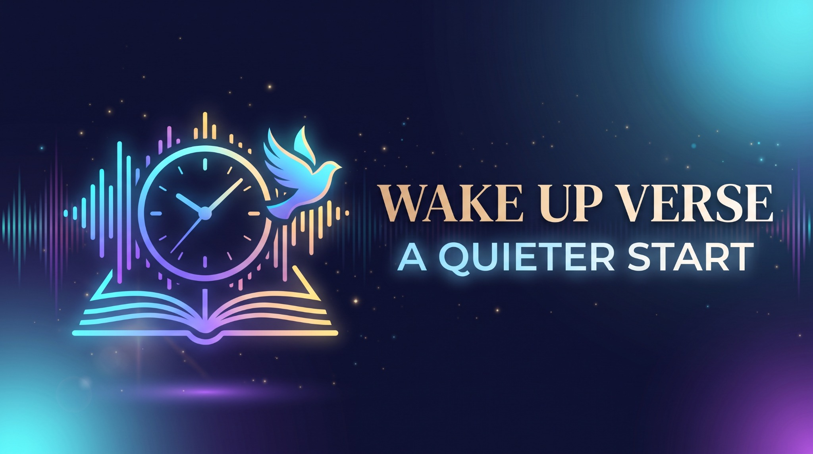
Built around what you keep
Save what resonates in My Verses, then choose from your saved library when you create an alarm or a playlist.
Set up multiple alarms and pick a saved verse for each one, or use Random Favorites to choose from your enabled categories.
Browse and save Bible selections, affirmations, Stoic and Buddhist quotes, or add a Custom Verse of your own.
Hear spoken words with optional ambient music. The Playlist tab plays your verses one after another, with a gentle breathing pause between them.
Open the alarm to see the verse in large type, with each word highlighted as it is read, until you stop or snooze.
Choose Daily Verse for an alarm and wake up to a different encouraging World English Bible verse each morning.
Repeat an alarm every few minutes or hours until the time you choose, for reminders beyond the morning.
Nightstand shows the time and a new verse every few minutes, silently, in warm low-light colors. Turn your phone sideways for a classic bedside clock.
Verse Frame works like a talking picture frame: every few minutes it shows a new verse and reads it aloud with soft ambient music.
Choose any voice installed on your iPhone for each alarm, and preview it first. Natural Premium and Enhanced voices are a free download in iPhone Settings.
Adjust text size and choose the look that suits you, with Forest and Night Glow themes.
Use saved verses in the app and prepare audio ahead of listening where supported, so a network connection is not needed at wake time.
Enable the categories you want in Settings. Disabled categories stay out of your verse library and alarm choices.
Nightstand & Verse Frame
Two ways to keep Scripture and encouragement in sight between alarms. Start either one from the Playlist tab.
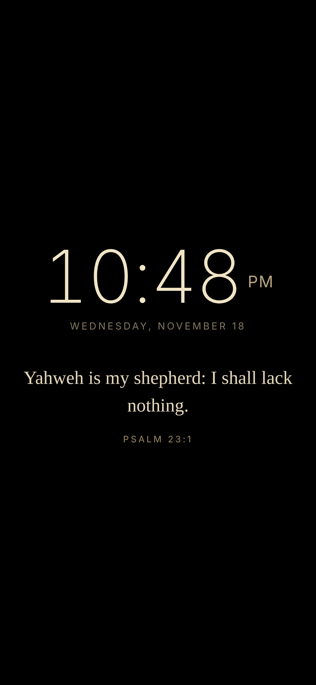
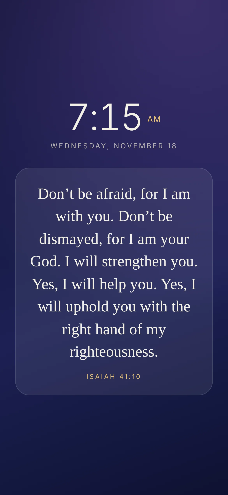
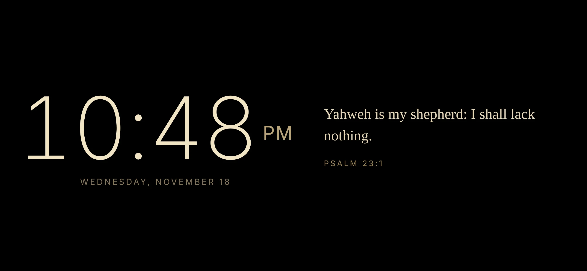
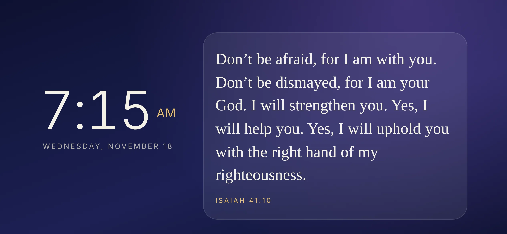
Turn your phone sideways for a classic bedside or desk clock.
A look inside
Explore the Forest and Night Glow screens, along with verse selection, playlists, and reading controls.

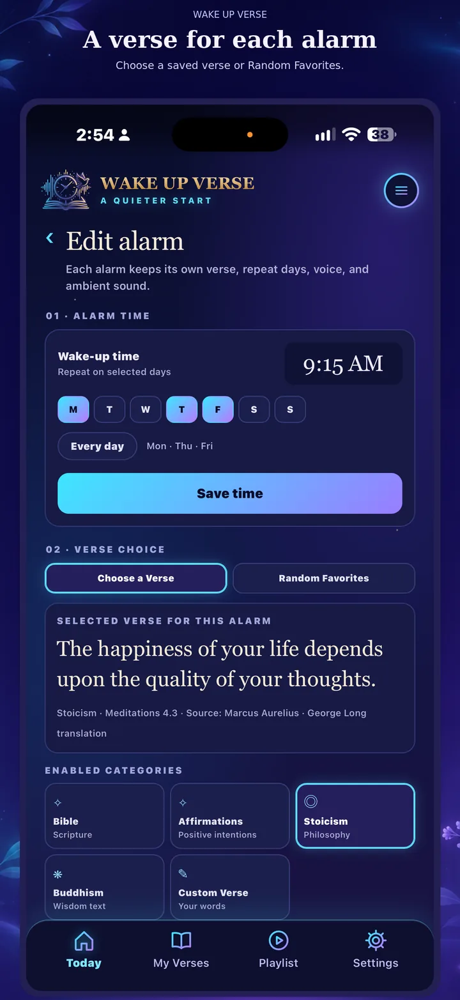
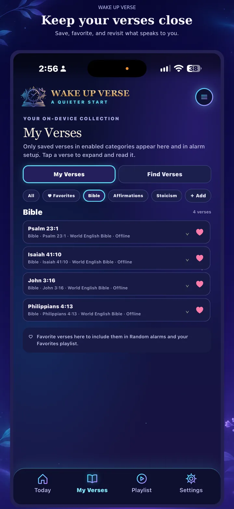
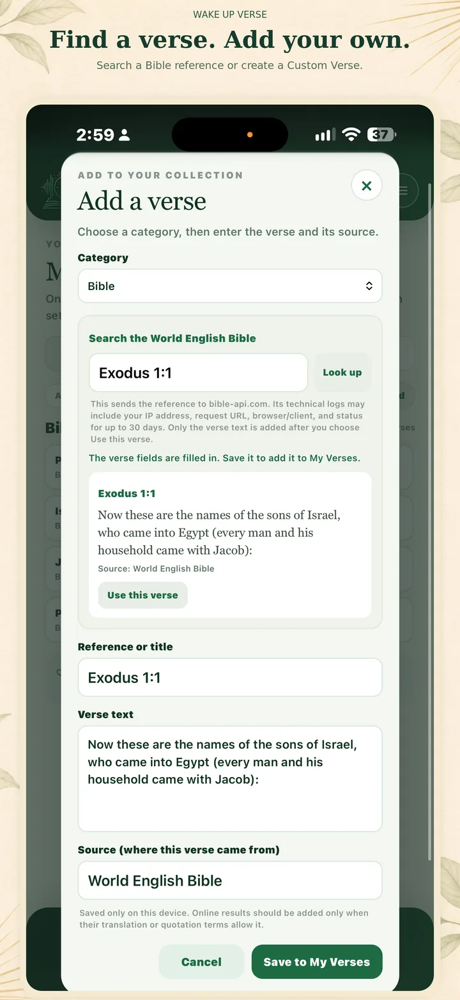
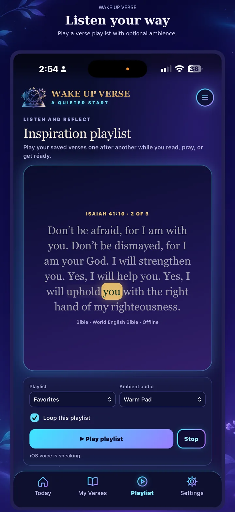
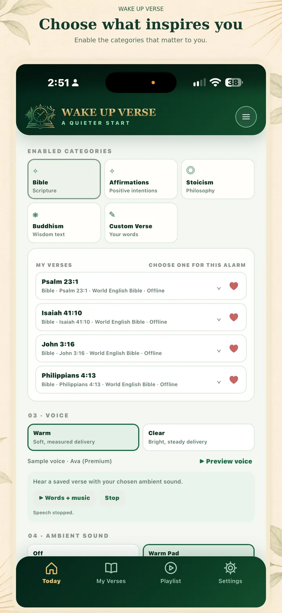
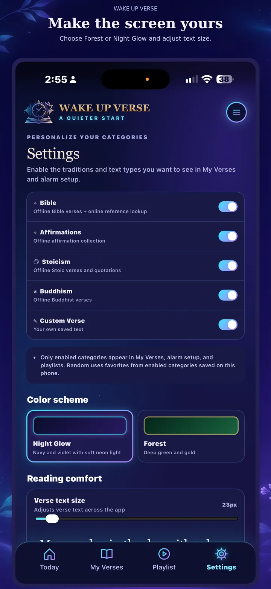